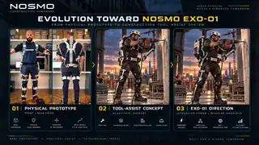

EXO-01.
A practical construction exoskeleton concept built around one objective: let the frame carry more of the heavy tool load while the worker keeps control of the job.
From passive load-bearing mechanics to a construction-specific tool-assist system.
The direction starts with real full-body passive exoskeleton mechanics, then focuses that principle on the heavy-tool tasks that matter on construction sites.

Reference / concept distinction: the physical prototype imagery shows an existing passive load-bearing exoskeleton reference used to illustrate the mechanical foundation. The construction scenes are concept visualisations of the NOSMO EXO-01 direction. EXO-01 remains an early R&D concept.
Mechanical first. Useful first.
EXO-01 is not intended to begin as powered armour. The first generation is a focused worker-assist platform designed around load transfer, tool support and practical construction mobility.
Passive frame
Full-body mechanical structure routes supported load through the torso, hips and legs instead of leaving the arms and back to carry everything.
Tool arm
An articulated support arm carries a major share of the tool weight while the operator still positions and controls the tool directly.
Onboard power
Battery or power modules are carried by the exoskeleton frame. Power routing follows the frame rather than relying on a trailing cable as the primary concept.
Modular mount
A replaceable tool interface is intended to support different heavy construction tools and, where technically possible, multiple manufacturers.
Site-ready design
PPE compatibility, rapid release, vibration management, maintainability and safe movement are core engineering requirements rather than later cosmetic additions.
Start where tool weight hurts productivity most.
Primary construction targets
Later evaluation
Road works, tunnelling, infrastructure maintenance, formwork and rebar operations may also benefit, but they introduce different mobility, terrain, vibration and safety requirements.
Bricklaying is not the first target. The role demands frequent bending, twisting, walking and reaching, so a full-body frame must prove it does not restrict the worker before it becomes useful there.
One measurable construction benefit at a time.
The first prototype should not attempt to solve every trade. It should demonstrate a clear reduction in operator load during a repeatable heavy-tool task.
Engineering definition
Load paths, tool envelope, body fit, power architecture, quick release and safety constraints.
Working prototype
Full-body mechanical frame with supported heavy tool and frame-mounted power.
Relevant-site test
Compare fatigue, stability, accuracy and task time with and without the system in a controlled construction task.
Pilot & industrialisation
Refine ergonomics, safety, manufacturability, servicing and certification strategy before commercial deployment.
Building for real construction conditions.
NOSMO is exploring mechanical engineering, biomechanics, heavy-tool, construction testing and industrial-development partnerships for this programme.
lab@nosmo.tech